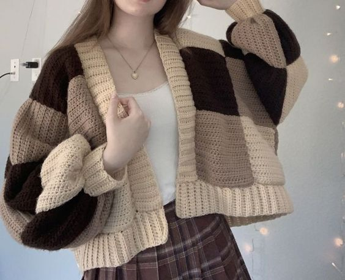
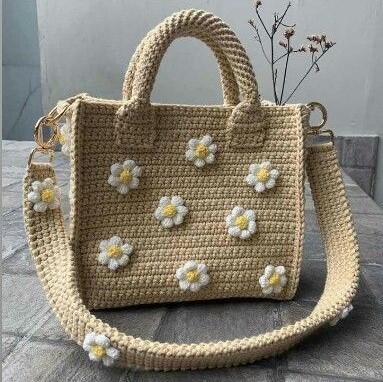
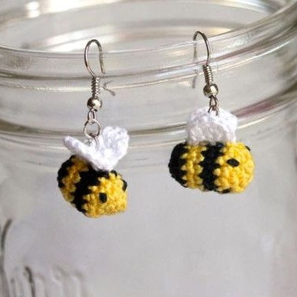
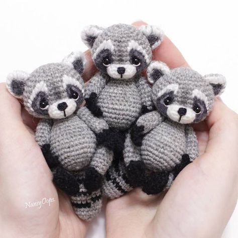

-Hainele croșetate au o caracteri-
stică distinsă printre alte
obiecte de purtat. Pe lângă
faptul că acestea posedă o
imagine artistică, dar și sunt
extrem de calitative, dacă sunt
efectuate corect. Trebuie să știi
că hainele necesită o perioadă
lungă de lucru și foarte multă
răbdare, de aceea trebuie să ai
un plan prestabilit pentru
proiectele începătoare.

-Gențile nu sunt deosebit de
complicate de efectuat, însă
pentru ele este necesar mate-
rialul din acril și coton.
Design-ul acestora depinde
doar de creativitatea ta, poți
folosi orișice bijuterie și
articole pentru înfrumusețare.

-Articolele de design implică orice
strop de originalitate. Hotarele
îți permit orișice creativitate,
deci acest aspect oferă o gamă
largă de produse fără nici o
restricție.

-Jucăriile, însă necesită foarte multă
atenție, dar și materiale.
Începând lucrul, ai nevoie de:

- Ață de acril/micropoliester/coton
- Umplutură de poliester
- Ochi/nas cu asigurare mecanică